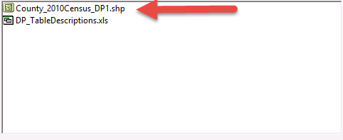

Posted on July 17th, 2015 at 9:00 PM
The United State Census Bureau collects a plethora of social and demographic data related to Americans. In addition, it also contains some pretty handy Boundary files such as States, Census Tract (CTs), Dissemination Areas (DAs) and Blocks which can be joined with your own personal data for some pretty nifty analysis.
This tutorial is going to walk you through, step by step, how to download and add spatial data from the US Census Bureau to ArcGIS Desktop.
Head on over to the US Census Bureau Website for a peek at the available datasets. We're going to be using the TIGER/Line with Selected Demographic and Economic Data so go ahead and click that link as seen below
On the resulting page, we want to grab the 2010 Census Demographic Profile in Shapefile Format. Go ahead and click it like in the image below
Next, click Counties to download the data
This step is crucial in order to import your data into ArcGIS. Head on over to your desktop and make a new folder named Temp. Next, navigate over to the downloaded Census .zip file, open it, and copy and paste its contents into your Temp Folder on your desktop
Boot up ArcGIS and create a new .mxd document. Next click, on the add data icon as seen below:
From there, we want to click on the tiny folder icon with the + ontop of it in order to connect to the Temp Folder we created earlier like so:
In the resulting dialogue box, navigate to your Desktop, then to the Temp Folder which contains the County Files
Finally, double click the County_2010Census_DP1.shp file like so:
And Voila, you've added your data to ArcMap.